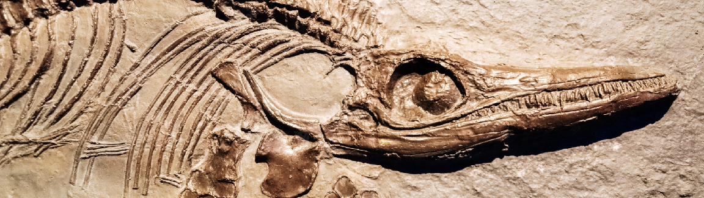
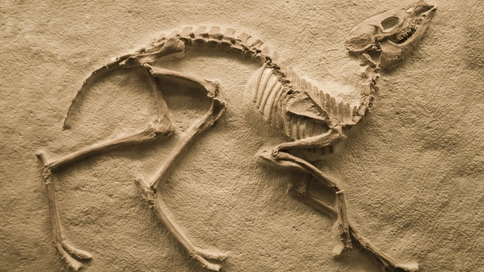
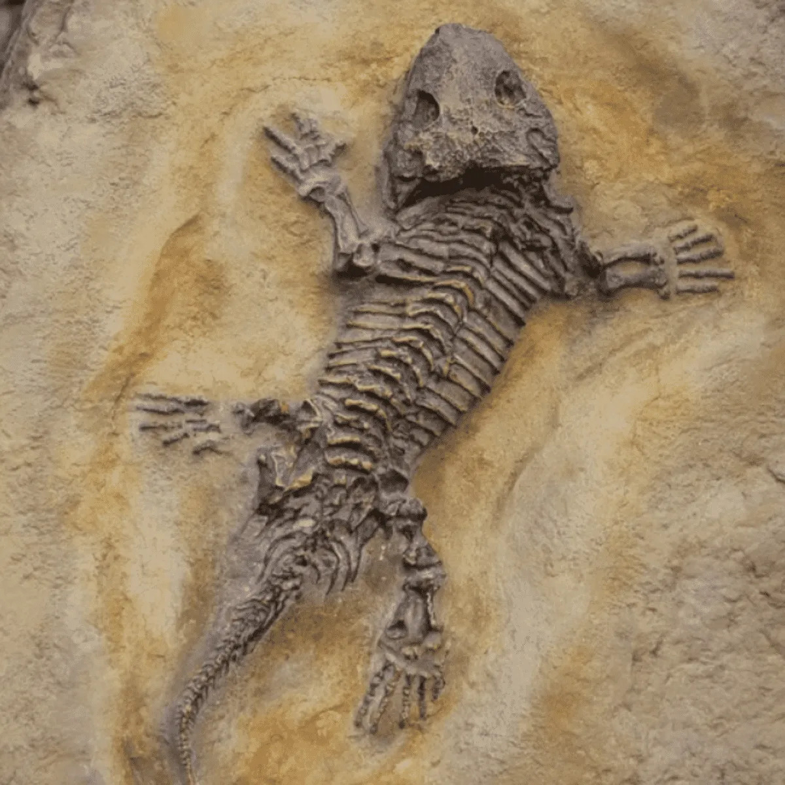
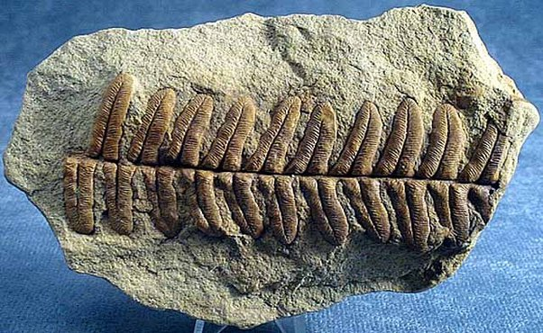

¿Qué es un Fosil?
Los fosiles son los restos oseos de animales los cuales llevan extintos millones de años como tambien pueden llevar extintos unos cuantos miles de años, apesar de que la mayoria de los fosiles suelen ser los huesos de dinosaurios o mamíferos gigantes que existieron desde la edad de hielo. Estos restos pueden variar desde los huesos, rocas, huevos e incluso las impresiones de las hojas y la piel. Aunque de manera mucho más extraña y dificíl tambien se han podido encontrar momias o cadaveres en permafrost los cuales por su estado de preservación y condición no se les podria llamar del todo fosiles.
Gran parte de estos restos que se han encontrado en tanto pozos de bréa como también en viejas minas y llacimientos han sido descubrimientos de manera incidental, durantes los años 1500 a 1600 los descubrimientos de restos fosiles fueron realizados por mineros inexpertos hasta que en 1666 se creo una nueva ciencia que daria apertura a la fascinación por estos seres, la cual seria llmada la paleontologia, donde grupos de cientificos preparados se dedican a buscar y recopilar información, al igual que preservar los restos de estos seres extintos los cuales sirven como evidencia clara de lo que ha venido antes de nosotros como humanidad y toda esa evidencia se queda conservada en los museos.
Los fosiles se generan apartir de los cadaveres de diversos animales o dinsaurios los cuales al morir su piel se pudre y solo quedan los huesos los cuales poco a poco empiezan a quedar enterrado en el lodo y el sedimento hasta que varias capas de tierra y minerales cubren los huesos los cuales se convierten en piedra. Aunque la posibilidad de que un cadaver se vuelva un fosil es algo baja, ya que no todos los huesos sobreviven al proceso de fosilización y solo quedan algunos restos esparcidos por muchos lugares.
  